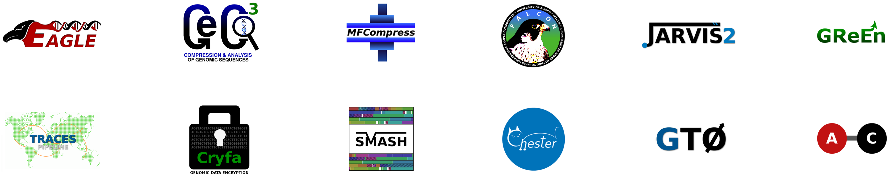

News


Full Professor


Auxilliary Researcher

PhD Student

MS Student

Visiting
Collaborator

PhD student
Collaborator

MS Student

MS Student
Our group develops new mathematical and computational models, including their efficient implementation into computer programs for biomedical, anthropological, and coding applications. We address both statistical and algorithmic natures creating innovative data mining and machine learning methodologies. We are currently working on projects such as the development of efficient biological data compression tools, reconstruction and analysis of viral genomes, identification of specific viral signatures, variation quantification, and metagenomic analysis of ancient DNA samples. The following word tree summarizes our works


In order to promote the development of efficient computational models for the minimal lossless representation of DNA and Amino Acid sequences, we hold two benchmarks. The latest top developments involve the use of neural networks for context mixing and cache hashes in weighted stochastic repeats models. Please, click on the following images to download the sequence data and benchmark with a new compression algorithm.
The EXON group is open to Researchers, Pos-docs, Ph.D. students, Master students and also undergraduate students. Informal inquiries are welcome. Please, send a CV and describe your interests in an email to pratas (at) ua.pt.